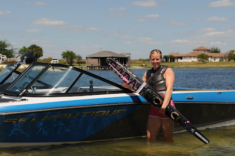
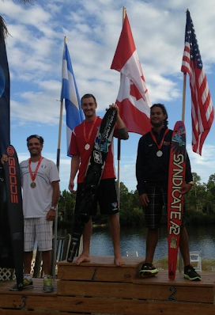
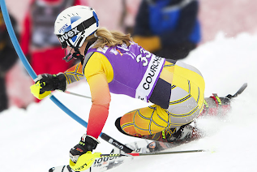
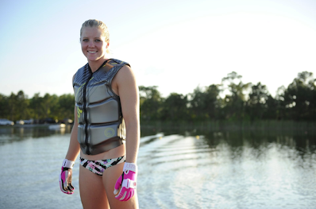
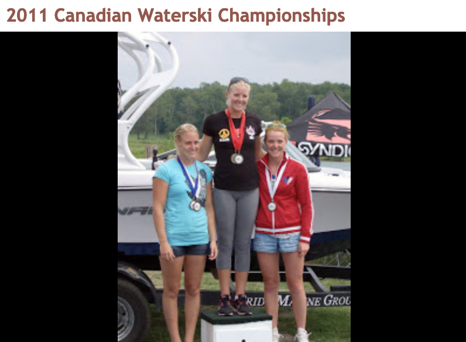
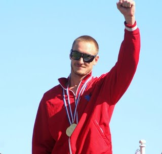
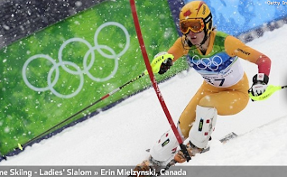

|
It's November 2012, and this is the final entry into this timeline. To recap, below are highlights from 2009 through 2012 of a group of skiers I've known from scratch. During this time they transitioned onto world teams and became fully autonomous in their lives. Now Whitney and Jason are full-time professional waterskiers, Erin is full time world alpine racer and Jenna has pursued more traditional career with competition as the other job. //
Waterski Home
//Thanks for viewing. Anda :D 2012 water ski: (March. Australia) Whitney McClintock wins 3 titles at Moomba Masters. (April 8. Florida) Whitney McClintock ties world slalom record, 2@41off. Whitney poses after world record tie (photo by Sherron McClintock) 
(September. Florida) Jason McClintock is Panam Slalom Champion and silver tricking. (photo by Steve Collins) 
2011-2012 alpine: Erin Mielzynski: A couple Nor-Am wins. / Picking up FIS World Cup points most races. (Photo by her dad, Andy Mielzynski). 13th in this race... 
(March 4. Germany) Erin wins World Cup Slalom. Her first WC win. Canada's first slalom win since 1971. The race recap video link, CTV story, Canada AM story The interviews... 2011 water ski: (May. US) Whitney McClintock wins prestigious Masters Trick title for 3rd year in a row. (Pro Ski 2011) Whitney wins all entered. (June. Florida) Jason's self-promotional video. (July. Russia) Whitney is World Slalom Champion, once again. 
(Aug. Ontario) Canadian nationals gold sweep: Jason McClintock, Whitney McClintock, Jenna Mielzynski and youngest, Chantal Singer, all earned golds. Whitney smashed Canadian slalom record, 1@ 41off (1 buoy short of world record), and set pending world record for overall score (slalom, trick, jump combined score) Toronto news article with pictures. I was working the dock when these exiting scores happened.  Photos from Nash (Oct. Mexico) Jason and Whitney McClintock medal haul at Pan Am Games. Whitney wins trick. 2010-2011 alpine: Erin Mielzynski: (Feb. Europe)cbc broadcast slalom (Garmisch) World Championships 16th place) (Zweisel) FIS World Cup 5th on 2nd run - 13th place overall 2010 water ski: (May. US) Whitney McClintock wins Masters Trick Title (Nov. Chili) Jason McClintock wins slalom and trick at Pan Am Championships. 
Jason's slalom and trick runs2009-2010 alpine: Erin Mielzynski: First season on Canadian Alpine Ski Team (CAST). (Nov. Aspen) First FIS World Cup race earns world cup point. (Feb. Whistler BC) 20th slalom at 1st Olympics. 
2009 water ski: Jenna Mielzynski wins Can Ams (Aug. Calgary, Canada) World Water Ski Championships, Calgary: Whitney McClintock: gold slalom, gold trick, gold overall, best world championship scores. Jason McClintock and Whitney McClintock: gold for Team Canada |